<!DOCTYPE lake>
<h2 data-lake-id="hWIjQ" data-lake-index-type="2" id="hWIjQ"><span data-lake-id="u4e13a827" id="u4e13a827">Git简介</span></h2><p data-lake-id="u30394c49" id="u30394c49"><span data-lake-id="ue7e215a5" id="ue7e215a5">当涉及到软件开发或协作时，版本管理是一个不可或缺的概念。无论你是一个独立开发者还是一个团队成员，都会遇到需要跟踪和管理代码变更的情况。这时候，Git作为一个强大而流行的版本控制系统就发挥着重要的作用。</span></p><p data-lake-id="u6efeb41e" id="u6efeb41e"><span data-lake-id="u2c7f7bae" id="u2c7f7bae">​</span><br/></p><p data-lake-id="u71dfb4b8" id="u71dfb4b8"><span data-lake-id="ub3f92d27" id="ub3f92d27">Git（读音为/gɪt/）是一个开源的分布式版本控制系统，可以有效、高速地处理从很小到非常大的项目版本管理。 也是Linus Torvalds为了帮助社区管理Linux内核而开发的一个开放源码的版本控制软件。2005年7月份，Linus花了两周时间自己用C写了第一个版本分布式版本控制系统。</span></p><p data-lake-id="u8daee865" id="u8daee865"><span class="lake-fontsize-11" data-lake-id="u0671c4cc" id="u0671c4cc" style="color: rgb(0, 0, 0)">​</span><br/></p><p data-lake-id="u719888de" id="u719888de"><span data-lake-id="u722d926a" id="u722d926a">Torvalds 开始着手开发 Git 是为了作为一种过渡方案来替代 BitKeeper</span></p><p data-lake-id="ud989f211" id="ud989f211"><span data-lake-id="u271101e5" id="u271101e5">​</span><br/></p><blockquote data-lake-id="uc13d9d3d" id="uc13d9d3d"><p data-lake-id="ua4f4449b" id="ua4f4449b"><span data-lake-id="u71b1f177" id="u71b1f177">Git是目前世界上最先进的（没有之一）分布式版本控制系统</span></p></blockquote><p data-lake-id="u8503f0d5" id="u8503f0d5"><span data-lake-id="ufb3f1750" id="ufb3f1750">​</span><br/></p><p data-lake-id="ud18c04e7" id="ud18c04e7"><span data-lake-id="uebf4288a" id="uebf4288a">参考：</span></p><p data-lake-id="u12394073" id="u12394073"><a data-lake-id="u5d89fee4" href="https://book.git-scm.com/book/zh/v2/%E8%B5%B7%E6%AD%A5-Git-%E7%AE%80%E5%8F%B2" id="u5d89fee4" rel="noopener noreferrer" target="_blank"><span data-lake-id="u0b8cfeda" id="u0b8cfeda">Git - Git 简史 (git-scm.com)</span></a></p><p data-lake-id="uf92b45db" id="uf92b45db"><a data-lake-id="u7430a7dc" href="https://blog.51cto.com/u_11475121/3339988" id="u7430a7dc" rel="noopener noreferrer" target="_blank"><span data-lake-id="u2853da23" id="u2853da23">大白话聊聊分布式版本管理工具 Git 的“前世今生”！_51CTO博客_git版本管理工具介绍</span></a></p><p data-lake-id="ua1c4a4e2" id="ua1c4a4e2"><span data-lake-id="ufa870b5c" id="ufa870b5c">​</span><br/></p><p data-lake-id="u3314e44b" id="u3314e44b"><strong><span data-lake-id="u9e30c5f7" id="u9e30c5f7">使用Git的三个目的：</span></strong></p><ol list="u1789a7f6"><li data-lake-id="u2ffcb870" fid="u501855fa" id="u2ffcb870"><span data-lake-id="u946165df" id="u946165df">在本地：保存和恢复项目代码任何历史状态</span></li><li data-lake-id="ub930b7f2" fid="u501855fa" id="ub930b7f2"><span data-lake-id="ucb9985d2" id="ucb9985d2">方便多人协作开发，同一个项目</span></li><li data-lake-id="u844f9c29" fid="u501855fa" id="u844f9c29"><span data-lake-id="u125cc77f" id="u125cc77f">把自己的项目开源，获取别人的开源项目</span></li></ol><p data-lake-id="u5c93b724" id="u5c93b724">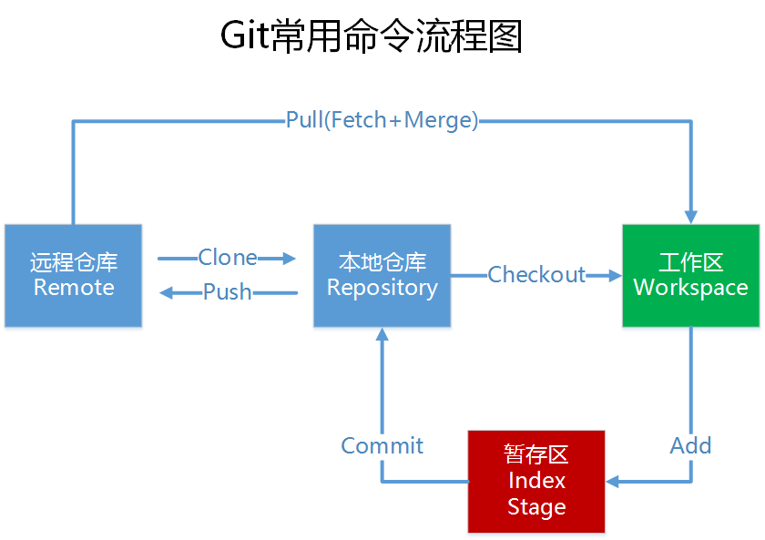</p><p data-lake-id="u33d83ba1" id="u33d83ba1"><code data-lake-id="ude4bd920" id="ude4bd920"><span data-lake-id="u6ea4233f" id="u6ea4233f">Add</span></code><span data-lake-id="u17711479" id="u17711479">：这里的Add不只是新增文件，包含所有对文件的操作（新增、修改、删除）。同样，Commit也是如此。</span></p><p data-lake-id="u1388cf72" id="u1388cf72"><code data-lake-id="uae9ff830" id="uae9ff830"><span data-lake-id="ucac4e2bd" id="ucac4e2bd">Push</span></code><span data-lake-id="u27bd063c" id="u27bd063c">：将所有的</span><code data-lake-id="u758dc8b0" id="u758dc8b0"><span data-lake-id="ubd793d40" id="ubd793d40">Commit</span></code><span data-lake-id="u184f011d" id="u184f011d">推送给服务器</span></p><p data-lake-id="u357a34ad" id="u357a34ad"><code data-lake-id="u8c3f9efc" id="u8c3f9efc"><span data-lake-id="u8a677322" id="u8a677322">Pull</span></code><span data-lake-id="udfa72923" id="udfa72923">：将服务器新的</span><code data-lake-id="ufe875747" id="ufe875747"><span data-lake-id="u447d4c96" id="u447d4c96">Commit</span></code><span data-lake-id="u1d9f83c7" id="u1d9f83c7">（可能是别人提交的，或者自己另一台设备提交的）拉取下来</span></p><p data-lake-id="ub0895ab5" id="ub0895ab5"><br/></p><h2 data-lake-id="dKT58" data-lake-index-type="2" id="dKT58"><span data-lake-id="u407a8d80" id="u407a8d80">下载及安装</span></h2><p data-lake-id="u9c6ecb7c" id="u9c6ecb7c"><span data-lake-id="ud1a161bf" id="ud1a161bf">git官方下载地址：</span><a data-lake-id="ucdcbca11" href="https://git-scm.com/downloads" id="ucdcbca11" rel="noopener noreferrer" target="_blank"><span data-lake-id="u9b9111f9" id="u9b9111f9">https://git-scm.com/downloads</span></a><span data-lake-id="u266bcf6d" id="u266bcf6d">，下载64位安装版。</span></p><p data-lake-id="u6d31b472" id="u6d31b472">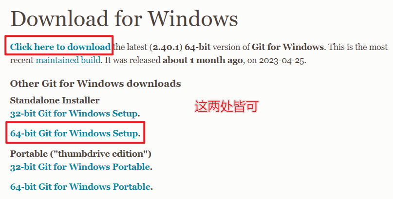</p><p data-lake-id="u9aad3f6d" id="u9aad3f6d"><span data-lake-id="u5f4e3126" id="u5f4e3126">如果下载速度慢，建议将下载链接复制到迅雷进行下载。</span></p><p data-lake-id="u5cc1291e" id="u5cc1291e"><br/></p><h2 data-lake-id="m1NYY" data-lake-index-type="2" id="m1NYY"><span data-lake-id="u808f43dc" id="u808f43dc">命令行操作</span></h2><h3 data-lake-id="cHrqK" data-lake-index-type="2" id="cHrqK"><span data-lake-id="ucee8ab6e" id="ucee8ab6e">全局设置</span></h3><p data-lake-id="ub2beb309" id="ub2beb309"><span data-lake-id="u6070bdd3" id="u6070bdd3">配置（</span><code data-lake-id="u9f2cfd45" id="u9f2cfd45"><span data-lake-id="ube614167" id="ube614167">config</span></code><span data-lake-id="u1e7ca475" id="u1e7ca475">）用户名和邮箱（git仓库网站上的注册邮箱）</span></p><span class="yuque-card-unsupported">[codeblock]</span><p data-lake-id="u0e175744" id="u0e175744"><span data-lake-id="u420703d4" id="u420703d4">查看现有配置</span></p><span class="yuque-card-unsupported">[codeblock]</span><h3 data-lake-id="PpKcb" data-lake-index-type="2" id="PpKcb"><span data-lake-id="uf7da169b" id="uf7da169b">初始化仓库</span></h3><p data-lake-id="u698a4ddf" id="u698a4ddf"><span data-lake-id="u202469fc" id="u202469fc">创建新的本地仓库，首先创建一个目录</span><code data-lake-id="u856825f9" id="u856825f9"><span data-lake-id="u62f604f7" id="u62f604f7">git_test</span></code><span data-lake-id="u5653d2d1" id="u5653d2d1">，然后在控制台进入该目录，执行初始化（</span><code data-lake-id="uf8351248" id="uf8351248"><span data-lake-id="u91b0180e" id="u91b0180e">init</span></code><span data-lake-id="u4869b1df" id="u4869b1df">）</span></p><span class="yuque-card-unsupported">[codeblock]</span><p data-lake-id="ub3f8101b" id="ub3f8101b"><span data-lake-id="ud89f882c" id="ud89f882c">可以通过如下命令查看仓库当前状态</span></p><span class="yuque-card-unsupported">[codeblock]</span><h3 data-lake-id="sCLmQ" data-lake-index-type="2" id="sCLmQ"><span data-lake-id="ua5420ca2" id="ua5420ca2">提交代码</span></h3><p data-lake-id="u25b99448" id="u25b99448"><span data-lake-id="ufc4d0c0f" id="ufc4d0c0f">目录</span><code data-lake-id="u6bb957e1" id="u6bb957e1"><span data-lake-id="u1cba2590" id="u1cba2590">git_test</span></code><span data-lake-id="u8b03d588" id="u8b03d588">中创建一个文件</span><code data-lake-id="uaa747e64" id="uaa747e64"><span data-lake-id="ua1f5941e" id="ua1f5941e">README.md</span></code><span data-lake-id="u3e1f4b7d" id="u3e1f4b7d">，提交（</span><code data-lake-id="u1543206e" id="u1543206e"><span data-lake-id="u0e8ac0ff" id="u0e8ac0ff">commit</span></code><span data-lake-id="uddda55dd" id="uddda55dd">）该文件</span></p><span class="yuque-card-unsupported">[codeblock]</span><p data-lake-id="uf3d9b297" id="uf3d9b297"><span data-lake-id="u7f81c16a" id="u7f81c16a">此时，我们的代码就拥有了历史记录，可以在本地随时回退到历史的版本。不要任何互联网操作。</span></p><p data-lake-id="u465a0b4e" id="u465a0b4e"><span data-lake-id="u753fab6f" id="u753fab6f">可以使用</span><code data-lake-id="u76cc35b3" id="u76cc35b3"><span data-lake-id="udb6665c4" id="udb6665c4">git add .</span></code><span data-lake-id="ua4c98676" id="ua4c98676">将未被版本管理的文件纳入到版本管理系统。</span></p><h3 data-lake-id="oPRjJ" data-lake-index-type="2" id="oPRjJ"><span data-lake-id="u1a15e387" id="u1a15e387">查看提交历史</span></h3><span class="yuque-card-unsupported">[codeblock]</span><h3 data-lake-id="R0VkK" data-lake-index-type="2" id="R0VkK"><span data-lake-id="u9f48a842" id="u9f48a842">推送代码</span></h3><p data-lake-id="u700c474a" id="u700c474a"><span data-lake-id="uf62e591f" id="uf62e591f">如果需要永久保存代码，或者想用其他电脑获取代码，或分享给同事进行共同开发，才需要联网，把代码推送到一个公共网络的代码仓库里。</span></p><p data-lake-id="u8b822b4f" id="u8b822b4f"><span data-lake-id="ub6ded882" id="ub6ded882">​</span><br/></p><p data-lake-id="u80e8d500" id="u80e8d500"><span data-lake-id="u3b2ee6f6" id="u3b2ee6f6">将本地仓库与远程仓库</span><code data-lake-id="u6c8fe343" id="u6c8fe343"><span data-lake-id="uf7080abe" id="uf7080abe">git_test_first</span></code><span data-lake-id="u4f62486c" id="u4f62486c">关联起来，随后推送（</span><code data-lake-id="ue04f73f4" id="ue04f73f4"><span data-lake-id="u8803eabd" id="u8803eabd">push</span></code><span data-lake-id="uadd07a67" id="uadd07a67">）过去</span></p><span class="yuque-card-unsupported">[codeblock]</span><p data-lake-id="u3f6c7175" id="u3f6c7175"><span data-lake-id="u6a57bc29" id="u6a57bc29">此时，我们的代码在远程服务器（名字叫origin）也有一个永久的备份了</span></p><blockquote data-lake-id="u21c53b9e" id="u21c53b9e"><p data-lake-id="u32e15a0f" id="u32e15a0f"><span data-lake-id="u0b041335" id="u0b041335">本地可以添加多个远程仓库，如果只有一个，名字建议使用</span><code data-lake-id="uee547022" id="uee547022"><span data-lake-id="u62c60ed4" id="u62c60ed4">origin</span></code></p><p data-lake-id="u894aae8e" id="u894aae8e"><span data-lake-id="u35b46615" id="u35b46615">可以通过</span><code data-lake-id="u80dc8519" id="u80dc8519"><span data-lake-id="ua80b4bf1" id="ua80b4bf1">git remote -v</span></code><span data-lake-id="ua4a480f4" id="ua4a480f4">查看有哪些远程仓库链接</span></p></blockquote><h3 data-lake-id="CXR18" data-lake-index-type="2" id="CXR18"><span data-lake-id="ucf433765" id="ucf433765">拉取合并代码</span></h3><p data-lake-id="u479dd3fd" id="u479dd3fd"><span data-lake-id="ubd85a00e" id="ubd85a00e">如果远程仓库的代码被别人修改并推送了，或者自己在其他电脑上修改推送了，则可以把那些修改拉（</span><code data-lake-id="ua6041b61" id="ua6041b61"><span data-lake-id="ub861a970" id="ub861a970">pull</span></code><span data-lake-id="u5ffef556" id="u5ffef556">）下来，并与本地的代码进行合并。</span></p><span class="yuque-card-unsupported">[codeblock]</span><h3 data-lake-id="Zwf2f" data-lake-index-type="2" id="Zwf2f"><span data-lake-id="uf0498516" id="uf0498516">克隆仓库</span></h3><p data-lake-id="u84e3978f" id="u84e3978f"><span data-lake-id="u96f1f8ed" id="u96f1f8ed">我们可以去开源平台上clone别人的代码，同样的，如果你的代码仓库是公开的，则别人可以下载到你的代码。</span></p><span class="yuque-card-unsupported">[codeblock]</span><p data-lake-id="ua0e88e73" id="ua0e88e73"><code data-lake-id="u8f943925" id="u8f943925"><span data-lake-id="u8a325635" id="u8a325635">clone</span></code><span data-lake-id="u4f9b9fd7" id="u4f9b9fd7">的地址使用HTTPS协议的：</span></p><p data-lake-id="ueeb8d5df" id="ueeb8d5df">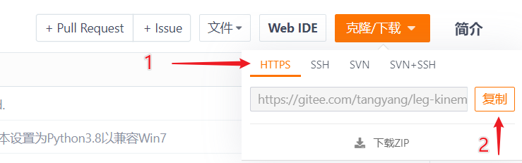</p><p data-lake-id="u4941a723" id="u4941a723"><br/></p><h3 data-lake-id="HFpai" data-lake-index-type="2" id="HFpai"><span data-lake-id="u322aebe6" id="u322aebe6">配置忽略文件</span></h3><p data-lake-id="udb6dbbd5" id="udb6dbbd5"><span data-lake-id="ue1dca1d4" id="ue1dca1d4">有一些临时文件不需要被提交，例如windows下的</span><code data-lake-id="ucb1e40fd" id="ucb1e40fd"><span data-lake-id="u6595a09f" id="u6595a09f">.swp</span></code><span data-lake-id="u008f74aa" id="u008f74aa">，苹果下的</span><code data-lake-id="ua3be07f0" id="ua3be07f0"><span data-lake-id="u937a24ec" id="u937a24ec">.DS_Store</span></code><span data-lake-id="u1adcc7bd" id="u1adcc7bd">。则可以通过在根目录的</span><code data-lake-id="ua094da97" id="ua094da97"><span data-lake-id="u2ee297b8" id="u2ee297b8">.gitignore</span></code><span data-lake-id="u102fd7fb" id="u102fd7fb">文件中添加描述，对这些文件进行忽略</span></p><span class="yuque-card-unsupported">[codeblock]</span><p data-lake-id="u779f2cf5" id="u779f2cf5"><br/></p><h3 data-lake-id="SBIl9" data-lake-index-type="2" id="SBIl9"><span data-lake-id="u8a494ac0" id="u8a494ac0">凭据管理</span></h3><p data-lake-id="u802490e4" id="u802490e4"><span class="lake-fontsize-10" data-lake-id="uf623b74f" id="uf623b74f">向git管理网站push代码时，首次需要输入账号和密码，后边会自动保存，如果需要查看、修改、删除。可打开Windows凭据管理。</span></p><ol list="u3ef47585"><li data-lake-id="u147f3415" fid="u4e955bc8" id="u147f3415"><span class="lake-fontsize-10" data-lake-id="u0d5e1c21" id="u0d5e1c21">点开始按钮（按下Windows键），搜索“凭据管理器”</span></li></ol><p data-lake-id="u6c8563db" id="u6c8563db">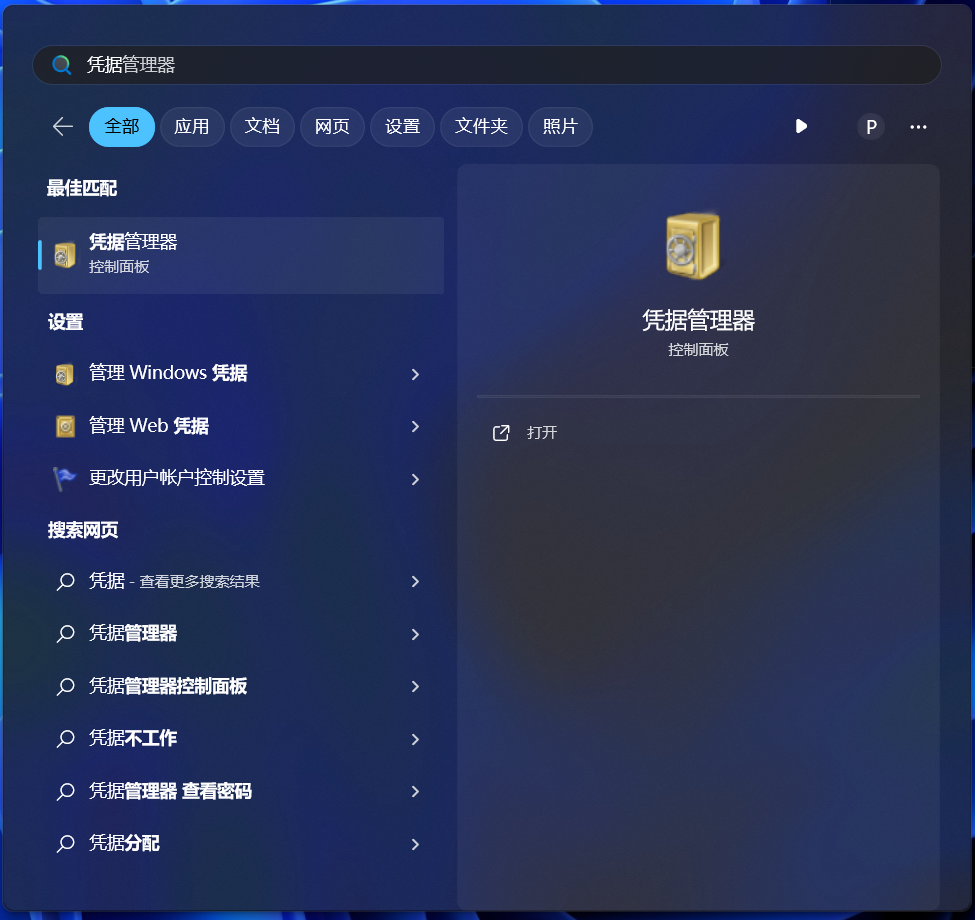</p><ol list="u3b0b885f" start="2"><li data-lake-id="u95c423ea" fid="u5f1af5d7" id="u95c423ea"><span data-lake-id="u079d7f69" id="u079d7f69">点击Windows凭据，可对普通凭据里之前输入的用户名密码进行编辑和删除操作</span></li></ol><p data-lake-id="u3a34873f" id="u3a34873f">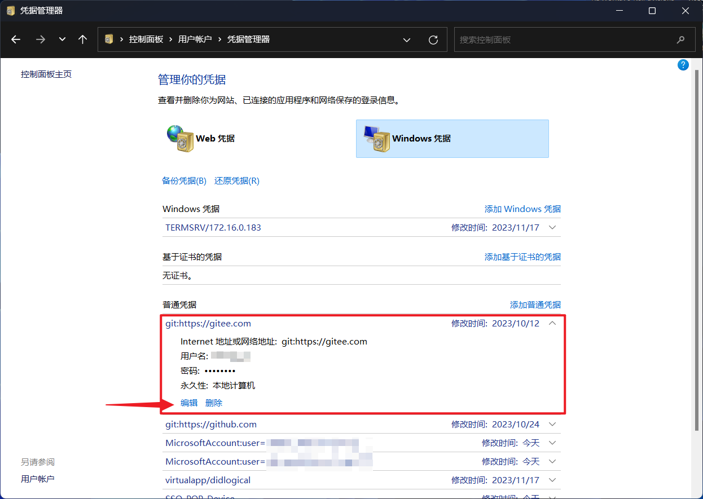</p><h2 data-lake-id="E01Qc" data-lake-index-type="2" id="E01Qc"><span data-lake-id="u7067f661" id="u7067f661">GUI工具操作</span></h2><p data-lake-id="u864a9413" id="u864a9413"><span data-lake-id="ud7ef6db5" id="ud7ef6db5">可以通过安装GUI客户端，替代大量的命令行操作，Git官方也推荐了很多GUI工具：</span><a class="yuque-card-link" href="https://git-scm.com/downloads/guis" rel="noopener noreferrer" target="_blank">bookmarkInline：bookmarkInline</a></p><p data-lake-id="ucd49fb91" id="ucd49fb91"><span data-lake-id="u9d866593" id="u9d866593">我们这里推荐使用</span><code data-lake-id="udbe5f776" id="udbe5f776"><span data-lake-id="ub73061e0" id="ub73061e0">TortoiseGit</span></code><span data-lake-id="u845371d7" id="u845371d7">（小乌龟）：</span><a class="yuque-card-link" href="https://tortoisegit.org/" rel="noopener noreferrer" target="_blank">bookmarkInline：bookmarkInline</a><span data-lake-id="u1735ebca" id="u1735ebca"> 支持中文</span></p><ul list="ufdb4f3a9"><li data-lake-id="u6456e59c" fid="u9bfb5799" id="u6456e59c"><span data-lake-id="u8237d54e" id="u8237d54e">请下载</span><code data-lake-id="u6b98bd52" id="u6b98bd52"><span data-lake-id="u5b4a6566" id="u5b4a6566">64-bit Windows</span></code><span data-lake-id="u678528ef" id="u678528ef">最新版客户端</span></li><li data-lake-id="u5ca5d59c" fid="u9bfb5799" id="u5ca5d59c"><span data-lake-id="ud2aaeb3d" id="ud2aaeb3d">请下载对应的 </span><code data-lake-id="u2218ee71" id="u2218ee71"><span data-lake-id="u7ce0aab5" id="u7ce0aab5">Chinese, simplified</span></code><span data-lake-id="u09c6cac4" id="u09c6cac4"> 简体中文汉化包</span></li></ul><p data-lake-id="u17d51c5d" id="u17d51c5d">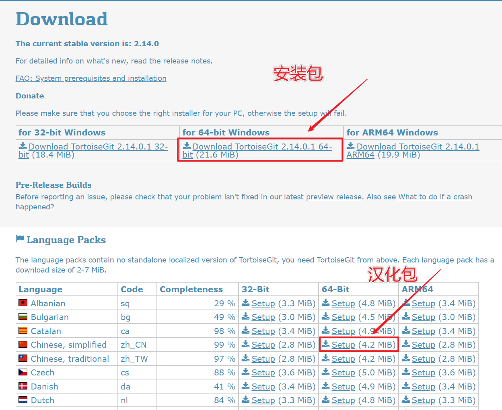</p><h3 data-lake-id="TTf5o" data-lake-index-type="2" id="TTf5o"><span data-lake-id="u23a3f754" id="u23a3f754">全局设置</span></h3><p data-lake-id="u31b1f0e8" id="u31b1f0e8">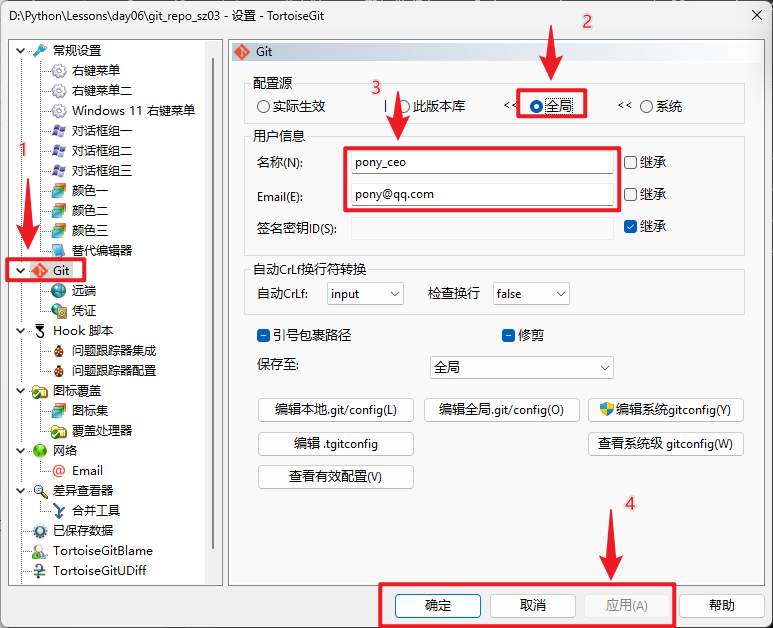</p><h3 data-lake-id="tLoRV" data-lake-index-type="2" id="tLoRV"><span data-lake-id="u581d4fa1" id="u581d4fa1">初始化仓库</span></h3><p data-lake-id="u0e1b8fca" id="u0e1b8fca">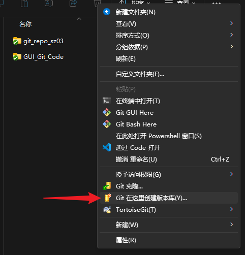</p><p data-lake-id="u7730efef" id="u7730efef"><span data-lake-id="ud3f5a130" id="ud3f5a130">直接点确定</span></p><p data-lake-id="u9eca0397" id="u9eca0397">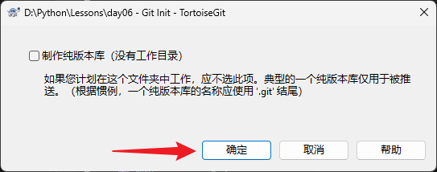</p><h3 data-lake-id="KuLcS" data-lake-index-type="2" id="KuLcS"><span data-lake-id="uc82ecfcb" id="uc82ecfcb">提交代码</span></h3><p data-lake-id="u8795cb6e" id="u8795cb6e"><span data-lake-id="udb996a12" id="udb996a12">在仓库中按住Shift按鼠标右键</span></p><article class="lake-columns" data-lake-id="u5bd47d0a" id="u5bd47d0a"><article class="lake-column-item" data-lake-id="u803abbc9" id="u803abbc9" style="width: 51.086957%"><p data-lake-id="u0bead54e" id="u0bead54e">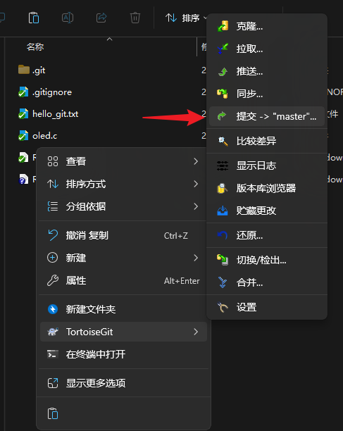</p></article><article class="lake-column-item" data-lake-id="ub5532887" id="ub5532887" style="width: 48.913043%"><p data-lake-id="u845aa25e" id="u845aa25e">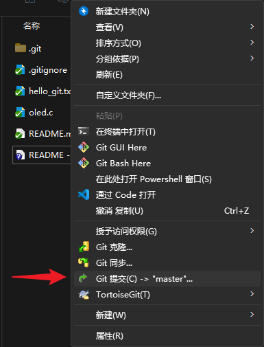</p></article></article><p data-lake-id="u2043fc0e" id="u2043fc0e"><span data-lake-id="u49cf43fa" id="u49cf43fa">输入提交日志并提交</span></p><p data-lake-id="u966f745e" id="u966f745e">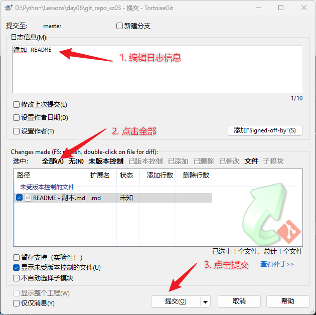</p><h3 data-lake-id="ThazQ" data-lake-index-type="2" id="ThazQ"><span data-lake-id="u6af0884e" id="u6af0884e">推送代码</span></h3><p data-lake-id="u9c6f84b1" id="u9c6f84b1">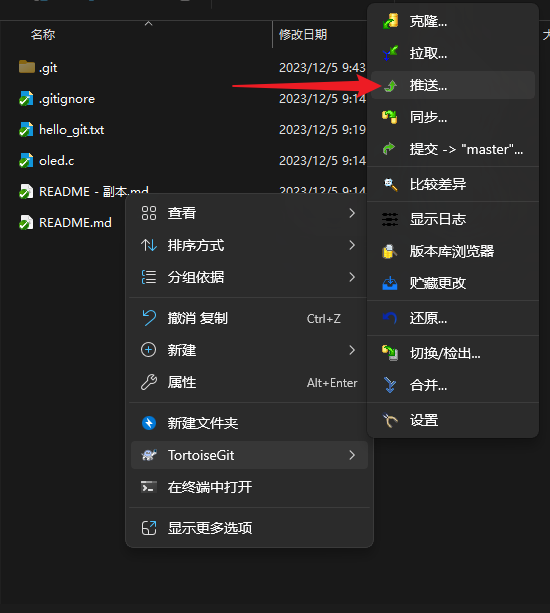</p><p data-lake-id="u6ae3b9a4" id="u6ae3b9a4">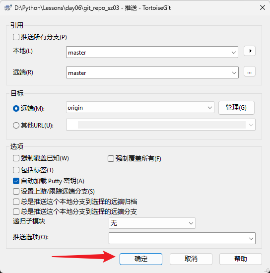</p><p data-lake-id="u28d1da52" id="u28d1da52"><br/></p><ul list="u36ea62dd"><li data-lake-id="u291a983b" fid="uf5d46748" id="u291a983b"><span data-lake-id="uf18d66f4" id="uf18d66f4">TortoiseGit提示No supported authentication methods available (server sent:publickey)</span></li></ul><p data-lake-id="u09fd3d5f" id="u09fd3d5f"><a data-lake-id="u5b08faac" href="https://blog.csdn.net/qq_62124267/article/details/133658207" id="u5b08faac" rel="noopener noreferrer" target="_blank"><span data-lake-id="u1db17a5d" id="u1db17a5d">https://blog.csdn.net/qq_62124267/article/details/133658207</span></a></p><h3 data-lake-id="aicG7" data-lake-index-type="2" id="aicG7"><span data-lake-id="uc73f488a" id="uc73f488a">拉取合并代码</span></h3><h3 data-lake-id="MIauJ" data-lake-index-type="2" id="MIauJ"><span data-lake-id="ub047d459" id="ub047d459">克隆仓库</span></h3><h3 data-lake-id="FwBZn" data-lake-index-type="2" id="FwBZn"><span data-lake-id="u08237dff" id="u08237dff">将已有代码git管理起来</span></h3><p data-lake-id="u2e893579" id="u2e893579"><span data-lake-id="uc438acb0" id="uc438acb0">如果本地初始化了仓库，远端也初始化了仓库，两个仓库就是独立的无关联仓库。（没有共同的历史记录）</span></p><p data-lake-id="ub8dc7305" id="ub8dc7305"><span data-lake-id="uc9c19dd8" id="uc9c19dd8">强制设置远端，并执行</span><code data-lake-id="u73afb71c" id="u73afb71c"><span data-lake-id="u44bbea49" id="u44bbea49">git pull</span></code><span data-lake-id="u56793391" id="u56793391">会报错：</span></p><span class="yuque-card-unsupported">[codeblock]</span><p data-lake-id="u6810aabb" id="u6810aabb"><strong><span data-lake-id="u6ffcdc64" id="u6ffcdc64">解决方案一：</span></strong></p><ul list="u8506904f"><li data-lake-id="u59f0df5f" fid="uaeb2ad53" id="u59f0df5f"><span data-lake-id="u290f75b6" id="u290f75b6">先把远程仓库clone到本地，把本地工程文件复制到新的工程目录里</span></li><li data-lake-id="u0aeacccf" fid="uaeb2ad53" id="u0aeacccf"><span data-lake-id="u66f6980b" id="u66f6980b">把两个仓库的内容合并</span></li><li data-lake-id="u898ec178" fid="uaeb2ad53" id="u898ec178"><span data-lake-id="uff131f3a" id="uff131f3a">再提交完整的内容 git commit</span></li><li data-lake-id="uc0d0adbc" fid="uaeb2ad53" id="uc0d0adbc"><span data-lake-id="u288777cc" id="u288777cc">最后进行推送 git push</span></li></ul><p data-lake-id="u09cf01e7" id="u09cf01e7"><strong><span data-lake-id="uacd51503" id="uacd51503">解决方案二：</span></strong></p><ul list="u821f7c50"><li data-lake-id="u1a2f2142" fid="u9e927f7e" id="u1a2f2142"><span data-lake-id="u121987d8" id="u121987d8">远程仓库创建时，不要初始化任何文件</span></li><li data-lake-id="uaad92b5d" fid="u9e927f7e" id="uaad92b5d"><span data-lake-id="u471fcb96" id="u471fcb96">本地仓库添加远程地址</span></li><li data-lake-id="u697a14de" fid="u9e927f7e" id="u697a14de"><span data-lake-id="u5170721d" id="u5170721d">直接提交推送即可 git commit, git push</span></li></ul><p data-lake-id="u31b879c9" id="u31b879c9"><strong><span data-lake-id="u666564be" id="u666564be">解决方案三：</span></strong></p><ul list="uc19d9b96"><li data-lake-id="ud426fb18" fid="uc300b14d" id="ud426fb18"><span data-lake-id="u1b1cd281" id="u1b1cd281">在小乌龟GUI拉代码git pull报错时，点击【合并非相关历史】</span></li><li data-lake-id="u23f73bfc" fid="uc300b14d" id="u23f73bfc"><span data-lake-id="ub4ba8432" id="ub4ba8432">或者在本地执行此命令：</span></li></ul><span class="yuque-card-unsupported">[codeblock]</span><h3 data-lake-id="SphO6" data-lake-index-type="2" id="SphO6"><span data-lake-id="uc9641f9f" id="uc9641f9f">代码重置&amp;恢复历史操作</span></h3><p data-lake-id="u4d722a1b" id="u4d722a1b"><strong><span data-lake-id="u89cd79d2" id="u89cd79d2">还原到上一次提交状态</span></strong></p><p data-lake-id="u09e380cc" id="u09e380cc">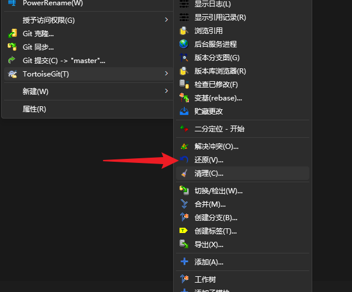</p><p data-lake-id="u213750c3" id="u213750c3"><strong><span data-lake-id="u22f390e3" id="u22f390e3">恢复到历史任何一次提交</span></strong></p><p data-lake-id="ubc4221c4" id="ubc4221c4">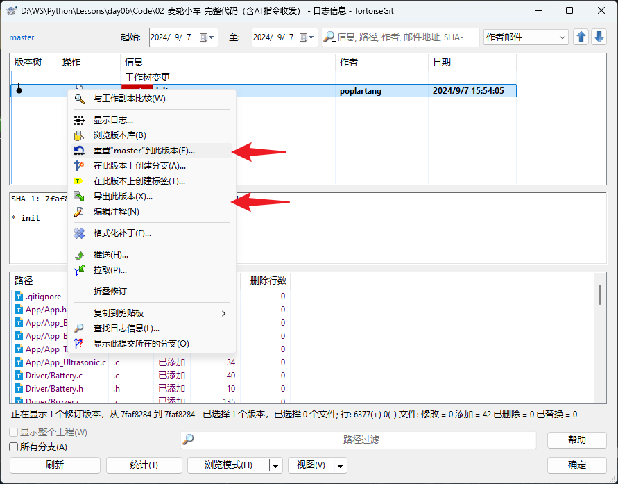</p><ul list="ufece0b51"><li data-lake-id="u4cd847c5" fid="u1dfac789" id="u4cd847c5"><span data-lake-id="ub7980fa4" id="ub7980fa4">使用硬重置</span></li></ul><p data-lake-id="u2fe0ae68" id="u2fe0ae68">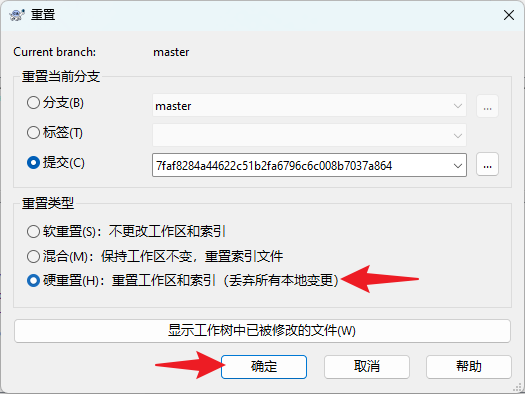</p><h2 data-lake-id="IuSZh" data-lake-index-type="2" id="IuSZh"><span data-lake-id="u2355f5b9" id="u2355f5b9">编辑器的Git操作</span></h2><p data-lake-id="u6ee7febc" id="u6ee7febc"><span data-lake-id="u3b7b8297" id="u3b7b8297">VSCode安装</span><code data-lake-id="uda3a7836" id="uda3a7836"><span data-lake-id="uf81b049a" id="uf81b049a">Git Graph</span></code><span data-lake-id="ubebfe6a7" id="ubebfe6a7">, </span><code data-lake-id="ud2fc3d7a" id="ud2fc3d7a"><span data-lake-id="u5daff6c7" id="u5daff6c7">Git History</span></code><span data-lake-id="u05ee9299" id="u05ee9299">插件，可查看Git提交历史</span></p><h3 data-lake-id="WnJv5" data-lake-index-type="2" id="WnJv5"><span data-lake-id="ua87d87f6" id="ua87d87f6">拉取合并代码</span></h3><h3 data-lake-id="gZHhb" data-lake-index-type="2" id="gZHhb"><span data-lake-id="uf7489811" id="uf7489811">提交代码</span></h3><h3 data-lake-id="oqaZ4" data-lake-index-type="2" id="oqaZ4"><span data-lake-id="u09215fff" id="u09215fff">推送代码</span></h3><h2 data-lake-id="zub8h" data-lake-index-type="2" id="zub8h"><span data-lake-id="u4cba158b" id="u4cba158b">冲突及解决</span></h2><h3 data-lake-id="VCVoU" data-lake-index-type="2" id="VCVoU"><span data-lake-id="u8747d927" id="u8747d927">冲突的产生</span></h3><p data-lake-id="u7cb2a4ac" id="u7cb2a4ac"><span data-lake-id="u19d13e77" id="u19d13e77">修改相同文件的相同行内容会产生冲突，如果远程有新的提交，其内容和本地修改的在同一文件同一行，则本地在</span><code data-lake-id="u3ae335d0" id="u3ae335d0"><span data-lake-id="u41f04e56" id="u41f04e56">git pull</span></code><span data-lake-id="u98fe2160" id="u98fe2160"> (git fetch + git merge)时，会产生冲突。需要先根据需要解决冲突，确保编译运行无误，再进行提交推送。</span></p><h3 data-lake-id="P6cHL" data-lake-index-type="2" id="P6cHL"><span data-lake-id="u551cd05f" id="u551cd05f">冲突的解决</span></h3><p data-lake-id="u26fee58c" id="u26fee58c"><span data-lake-id="ufd44dcb3" id="ufd44dcb3">建议使用手动方式，也可使用编辑器的冲突处理工具。自己决定保留本地还是远程的代码（或者都保留），随后进行提交推送。</span></p><h3 data-lake-id="uYXGJ" data-lake-index-type="2" id="uYXGJ"><span data-lake-id="u02934a0a" id="u02934a0a">如何避免冲突</span></h3><ol list="ua746e354"><li data-lake-id="u824f7704" fid="u10b46eea" id="u824f7704"><span data-lake-id="u774e8740" id="u774e8740">避免修改相同文件</span></li><li data-lake-id="uc99769f1" fid="u10b46eea" id="uc99769f1"><span data-lake-id="ufa791ef1" id="ufa791ef1">改完记得及时提交，推送push</span></li><li data-lake-id="ua9fa6a22" fid="u10b46eea" id="ua9fa6a22"><span data-lake-id="ud328470d" id="ud328470d">在写代码之前，及时pull拉取最新的代码</span></li><li data-lake-id="u06dddeb2" fid="u10b46eea" id="u06dddeb2"><span data-lake-id="u0fe86aaf" id="u0fe86aaf">出现冲突不可怕，是正常的：</span></li></ol><ol data-lake-indent="1" list="ua746e354"><li data-lake-id="uc905f498" fid="u10b46eea" id="uc905f498"><span data-lake-id="u0cc7c68b" id="u0cc7c68b">手动方式合并代码</span></li></ol><span class="yuque-card-unsupported">[codeblock]</span><p data-lake-id="u532d8ea6" id="u532d8ea6"><span data-lake-id="ufecdb1f9" id="ufecdb1f9"> 	b. 使用VSCode冲突解决工具</span></p><p data-lake-id="u878b3831" id="u878b3831"><span data-lake-id="u4b294f26" id="u4b294f26">​</span><br/></p><h2 data-lake-id="xnzhV" data-lake-index-type="2" id="xnzhV"><span data-lake-id="u5379082a" id="u5379082a">Git分支</span></h2><span class="yuque-card-unsupported">[codeblock]</span><h2 data-lake-id="GZJOG" data-lake-index-type="2" id="GZJOG"><span data-lake-id="u9d3afa64" id="u9d3afa64">Git学习链接</span></h2><p data-lake-id="u3cd91728" id="u3cd91728"><a data-lake-id="ue3a2d607" href="https://zhuanlan.zhihu.com/p/129854679" id="ue3a2d607" rel="noopener noreferrer" target="_blank"><span data-lake-id="u6c761980" id="u6c761980">小姐姐用动画图解 Git 命令，这也太秀了吧？！</span></a></p><p data-lake-id="u29a6fe9e" id="u29a6fe9e"><a class="yuque-card-link" href="https://mp.weixin.qq.com/s?__biz=MzAxOTcxNTIwNQ==&amp;mid=2457915797&amp;idx=1&amp;sn=7d44bcdb2bc42f695ca3b3b0b75afeb2&amp;chksm=8cb6b47fbbc13d69c0298ef965e11318161b56a289e066518a94712df318e0ea6f1e40acf963&amp;scene=21#wechat_redirect" rel="noopener noreferrer" target="_blank">bookmarkInline：bookmarkInline</a></p><p data-lake-id="u570a2c77" id="u570a2c77"><a class="yuque-card-link" href="https://mp.weixin.qq.com/s?__biz=MzAxOTcxNTIwNQ==&amp;mid=2457914802&amp;idx=1&amp;sn=a8d2cb9b626da84d94d8b2ebd9e85c24&amp;chksm=8cb6a858bbc1214e62feff7028ce6b6e942556e42d5f2edbedb8216a03c0b54fa52ce378256e&amp;scene=21#wechat_redirect" rel="noopener noreferrer" target="_blank">bookmarkInline：bookmarkInline</a></p><p data-lake-id="ud239995e" id="ud239995e"><a class="yuque-card-link" href="https://learngitbranching.js.org/?locale=zh_CN" rel="noopener noreferrer" target="_blank">bookmarkInline：bookmarkInline</a></p><p data-lake-id="u4e90a66b" id="u4e90a66b"><a class="yuque-card-link" href="https://nvie.com/posts/a-successful-git-branching-model/" rel="noopener noreferrer" target="_blank">bookmarkInline：bookmarkInline</a></p><p data-lake-id="u462c88a3" id="u462c88a3"><br/></p><h2 data-lake-id="roSj9" data-lake-index-type="2" id="roSj9"><span data-lake-id="u35cd6276" id="u35cd6276">异常问题处理</span></h2><h3 data-lake-id="JRmC8" data-lake-index-type="2" id="JRmC8"><span data-lake-id="u0969cf03" id="u0969cf03">git push失败</span></h3><p data-lake-id="u812848da" id="u812848da"><strong><span data-lake-id="u81948726" id="u81948726">错误截图1：</span></strong></p><p data-lake-id="ubf7226c0" id="ubf7226c0">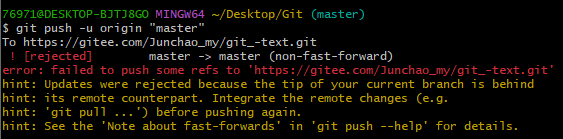<span data-lake-id="u1bc33a93" id="u1bc33a93">​</span></p><p data-lake-id="u8ece010f" id="u8ece010f"><span data-lake-id="u78cbba2d" id="u78cbba2d">说明远程仓库已经初始化过了（新建仓库时，勾选了初始化README.md等文件），需要先</span><code data-lake-id="u8aaeb80a" id="u8aaeb80a"><span data-lake-id="ue551b1d2" id="ue551b1d2">git pull</span></code><span data-lake-id="ua289cb00" id="ua289cb00">才能推送。此时由于本地也初始化过，所以建议在一个空的目录把远程仓库c</span><code data-lake-id="u12457d1c" id="u12457d1c"><span data-lake-id="u2c6c7821" id="u2c6c7821">lone</span></code><span data-lake-id="u58410395" id="u58410395">下来，然后把项目代码拷贝进去再提交推送。</span></p><p data-lake-id="u91f53990" id="u91f53990"><span data-lake-id="u9f8188ec" id="u9f8188ec">或者使用TortoiseGit进行pull操作，然后点击【合并非相关历史】：</span></p><p data-lake-id="u498a3ec9" id="u498a3ec9">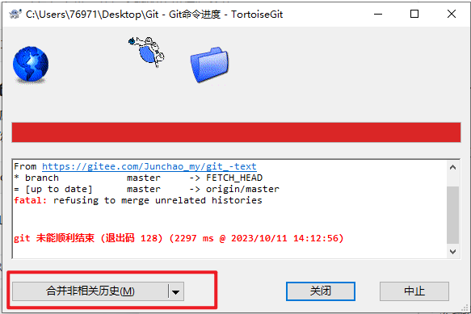</p><p data-lake-id="u82788af1" id="u82788af1"><strong><span data-lake-id="u8758446f" id="u8758446f">错误截图2：</span></strong></p><p data-lake-id="u732cd214" id="u732cd214">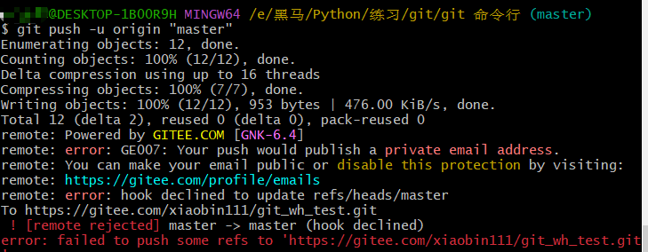</p><p data-lake-id="u72b446e5" id="u72b446e5"><span data-lake-id="uf4f8a386" id="uf4f8a386">注册账户时不能勾选隐藏email，否则无法推送代码。在设置的【邮箱管理】里取消勾选【不公开我的邮箱地址】即可</span></p><p data-lake-id="u74a3feb2" id="u74a3feb2">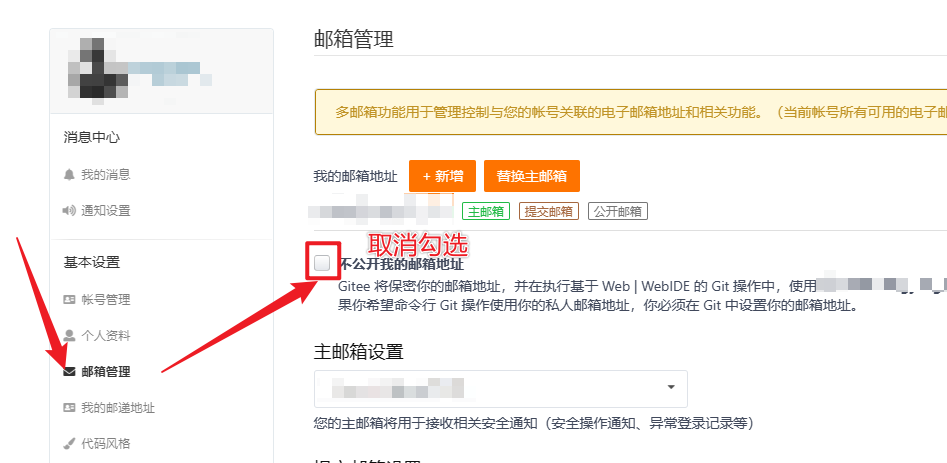</p><h3 data-lake-id="xqMgZ" data-lake-index-type="2" id="xqMgZ"><span data-lake-id="u6399604d" id="u6399604d">TortoiseGit图标不显示</span></h3><p data-lake-id="u29ce5f3d" id="u29ce5f3d">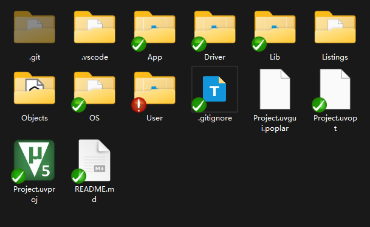</p><p data-lake-id="ue8f5b1cf" id="ue8f5b1cf"><span data-lake-id="u813e7332" id="u813e7332">如上文件夹上的绿色红色状态图标如果不显示，可以按照如下步骤解决：</span></p><p data-lake-id="uf97bb327" id="uf97bb327"><span data-lake-id="u345fc933" id="u345fc933">​</span><br/></p><ol list="uc08ae28e"><li data-lake-id="uc091d1b5" fid="u3a712c8d" id="uc091d1b5"><span data-lake-id="u0aa4752c" id="u0aa4752c">空白右键处进入TortoiseGit设置</span></li></ol><p data-lake-id="ub8514f40" id="ub8514f40">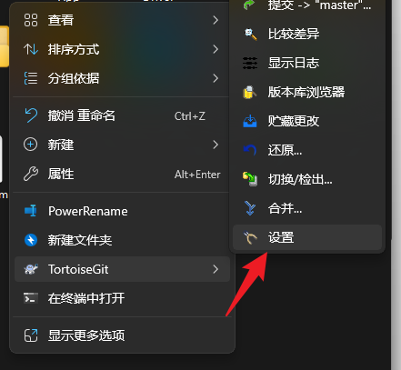</p><ol list="u5e64e13f" start="2"><li data-lake-id="ud1d97f54" fid="ue5860c13" id="ud1d97f54"><span data-lake-id="ub78030ac" id="ub78030ac">打开【图标覆盖】- 【覆盖处理器】- 【启动注册表编辑】</span></li></ol><p data-lake-id="ub1ef3210" id="ub1ef3210">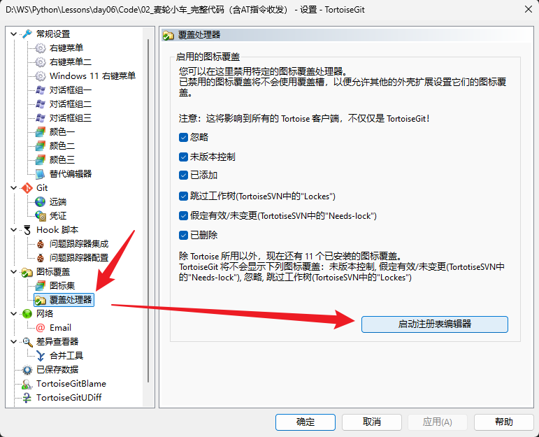</p><ol list="u65ad2836" start="3"><li data-lake-id="u8865de33" fid="u74c923e4" id="u8865de33"><span data-lake-id="u447007f1" id="u447007f1">把所有Tortoise开头的目录重命名，前边加10个空格（空格越多，位置越靠前）</span></li></ol><p data-lake-id="uf4d3cf47" id="uf4d3cf47">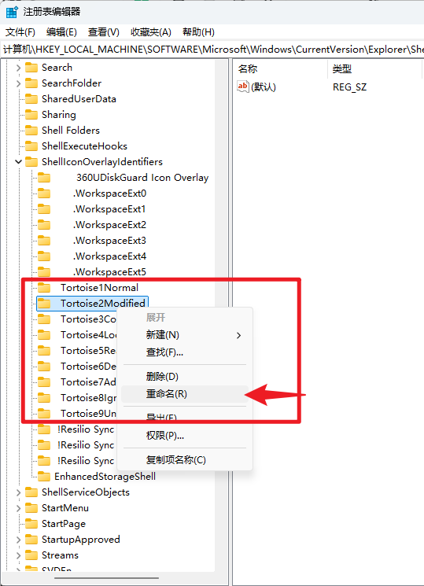</p><ol list="u632a4081" start="4"><li data-lake-id="u43103c0e" fid="u02863987" id="u43103c0e"><span data-lake-id="u42fd803a" id="u42fd803a">重启explorer即可，Ctrl + Shift + Esc打开任务管理器，重启explorer</span></li></ol><p data-lake-id="u994dea1e" id="u994dea1e">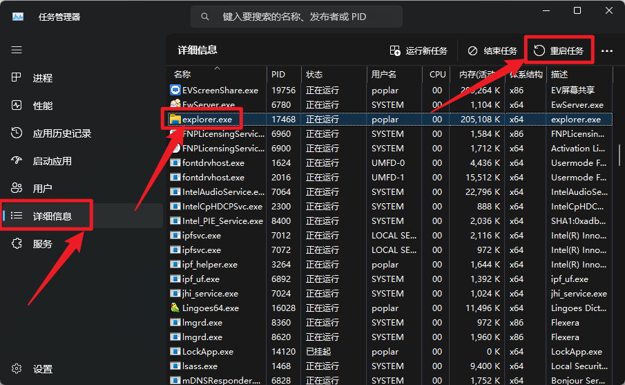</p><p data-lake-id="ucb59dee8" id="ucb59dee8"><span data-lake-id="u6651f333" id="u6651f333">​</span><br/></p><p data-lake-id="u40d42ddf" id="u40d42ddf"><span data-lake-id="u15013408" id="u15013408">参见文档：</span></p><p data-lake-id="uc0dd0d13" id="uc0dd0d13"><a data-lake-id="u352abd17" href="https://blog.csdn.net/weixin_41292299/article/details/139232291" id="u352abd17" rel="noopener noreferrer" target="_blank"><span data-lake-id="u2e962293" id="u2e962293">解决TortoiseGit文件夹和文件状态图标不显示问题_tortoisegit文件夹没有图标-CSDN博客</span></a></p><p data-lake-id="ud4b076e2" id="ud4b076e2"><a data-lake-id="u317fad91" href="https://blog.csdn.net/2301_80967396/article/details/141129388" id="u317fad91" rel="noopener noreferrer" target="_blank"><span data-lake-id="uf22787d4" id="uf22787d4">Windows中解决TortoiseGit 不显示状态图标的问题_tortoisegit图标不显示-CSDN博客</span></a></p>